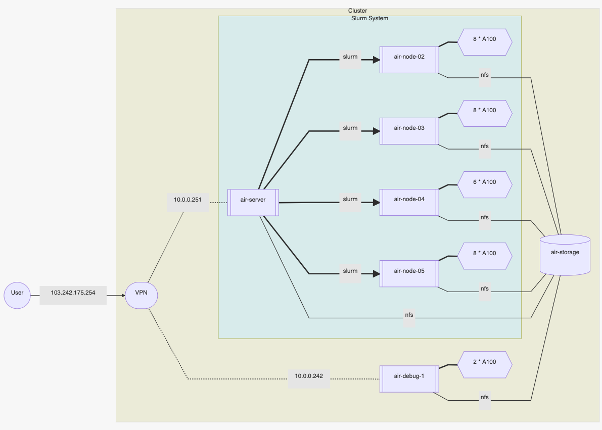

概述
1. 使用前必读
请认真阅读本指南
这是一份 AIR 计算资源的使用指南，其中包括了若干注意事项和命令帮助。 为了服务器的稳定运行以及使用者的数据安全，请各位用户认真阅读。 如果发现本指南中的疏漏之处，请联系管理员，或点击右上角链接进入 GitHub 提交 issue 或 pull request 。
不要着急使用
请阅读 注意事项 。
2. Updates
2022.02.16 更新：
- 存储机软配额与硬配额分别调整为
9216G与10240G，超过软配额之后的调整时间降低为 3 天 - 文档添加了大量 Slurm 系统的概念解释，使用方法示例
- Slurm 系统采用新的资源使用限制方式：累计资源使用时与当前资源使用时，原有的 GPU 使用数量，任务运行数量与任务运行时间的限制取消。具体文档说明请见这里
- VPN 系统即将启用，请各位用户提前熟悉 VPN 使用方式
2022.02.11 更新：
- 存储机完成扩容，各组磁盘使用软配额与硬配额分别调整为
7168G与8192G CUDA Toolkit默认版本升级为11.6，与此同时/usr/local目录下保留11.1，11.4，11.5版本
2022.01.18 更新：
- 加入 VPN 系统使用说明。为保护资源不被攻击，2022年2月7日起集群资源将只能通过 VPN 访问
2022.01.04 更新：
- 每个用户在集群中最多同时运行任务数量调整为 6 个
2021.12.17 更新：
- 任务运行时间上限调整为 5 天
2021.12.04 更新：
- 支持任务开始运行、结束运行时，通过邮件通知用户，如需使用请参考这里
2021.11.30 更新：
- 所有节点均已添加容器应用支持
- 添加资源使用限制：单个用户占用GPU数量最多为 8 张
2021.11.27 更新：
- 任务运行时间上限调整为 3 天，用户运行任务上限为 4 个（队列中任务数量无限制）。如有特殊需求请联系管理员
- 已在
air-node-01与air-node-03上添加容器运行支持，如需使用请参考这里
3. 服务器架构

Authors: